Environmental Microbiology
Microbial ecology, diversity analysis and environmental monitoring for sustainable solutions.
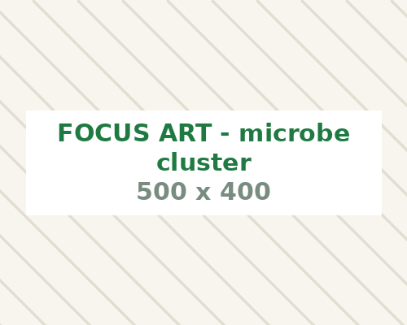
Environmental Microbiology • Biotechnology • Bioremediation
I am Shubha Dixit, a PhD researcher exploring the potential of microorganisms and fungi to address environmental pollution, arsenic contamination and agricultural challenges. My work integrates classical microbiology with molecular, genomic and multi-omics approaches to build sustainable solutions for a healthier planet.
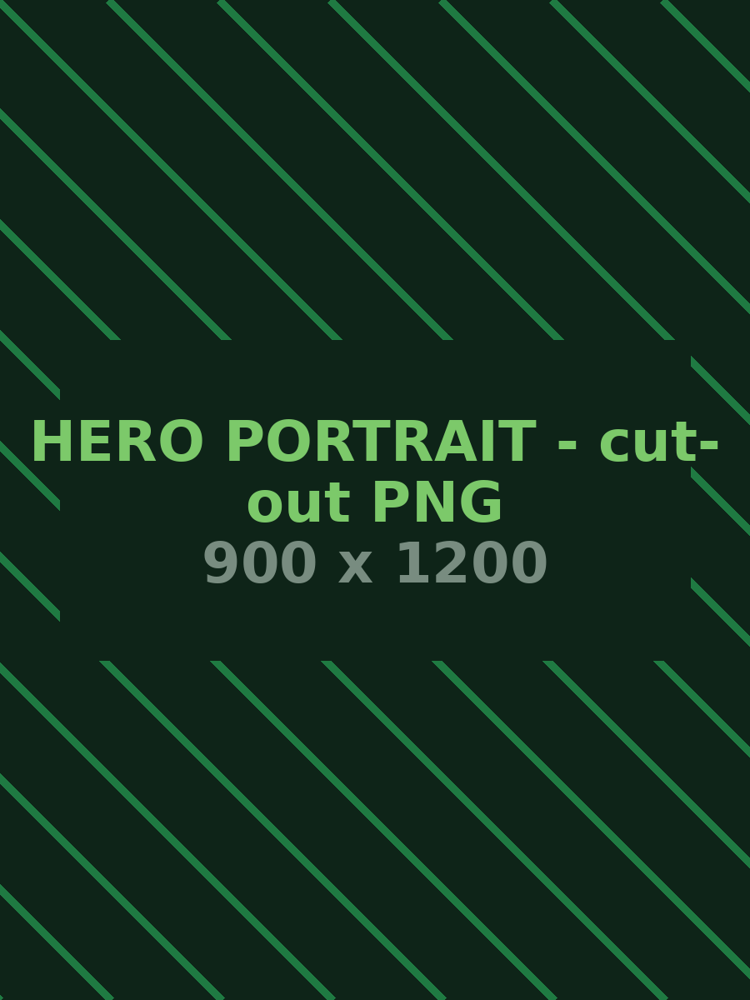
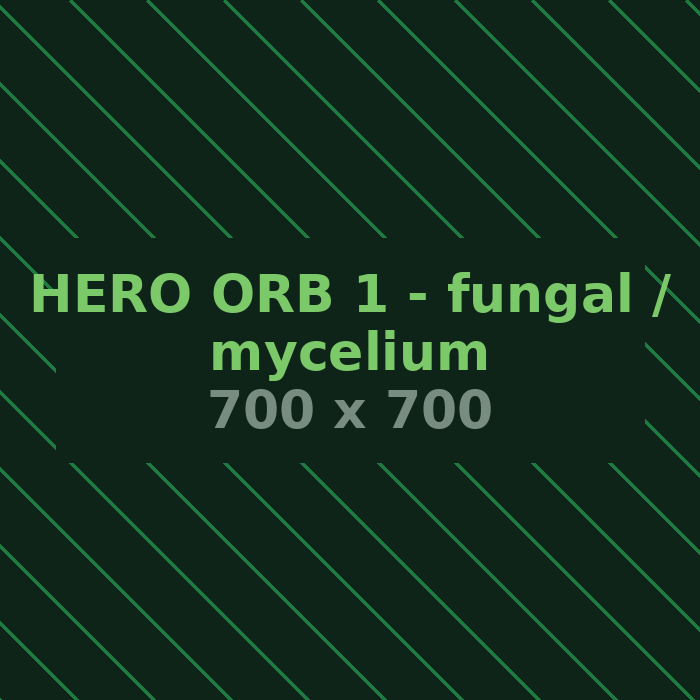
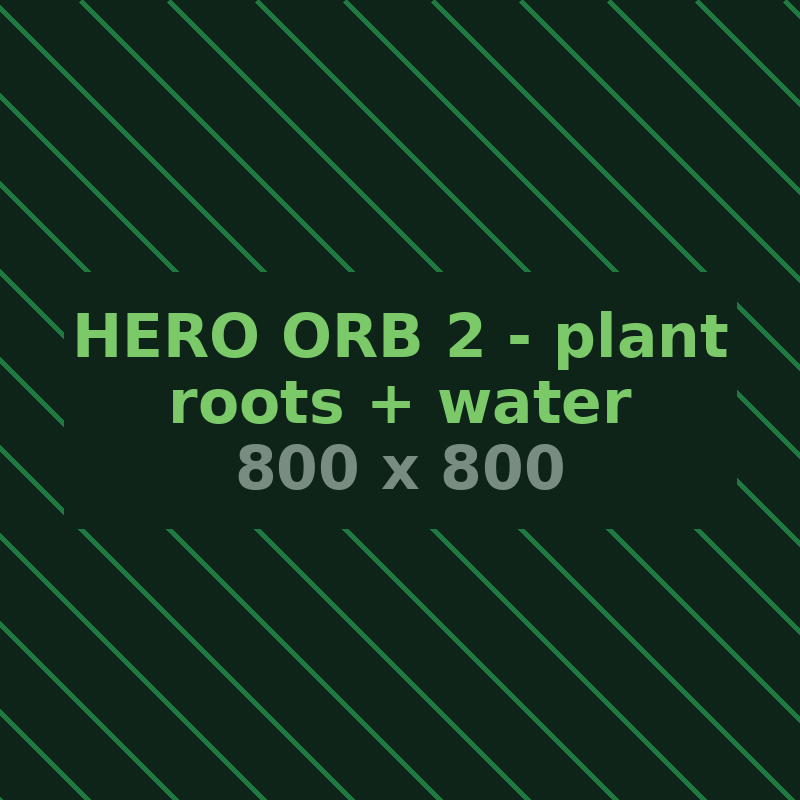
Microbial ecology, diversity analysis and environmental monitoring for sustainable solutions.

Rhizosphere and endophytic microbes enhancing plant growth and stress tolerance.
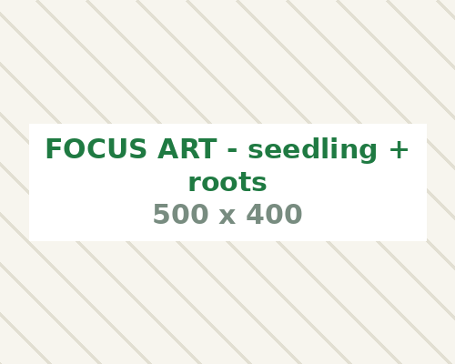
Microbial transformation and immobilization of arsenic for environmental safety.
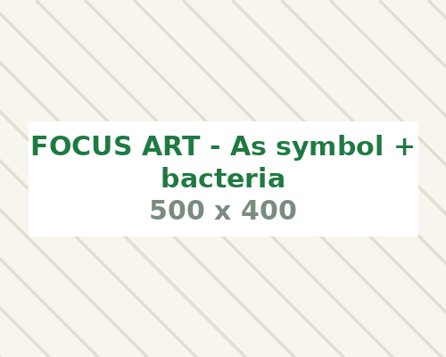
Microbial strategies for soil health, contaminant mitigation and crop resilience.
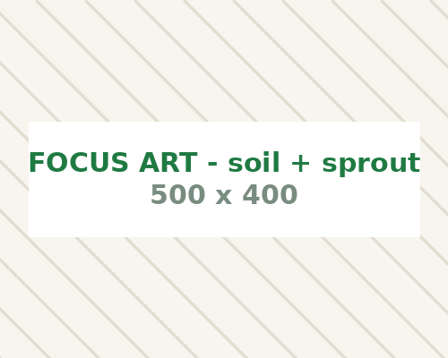
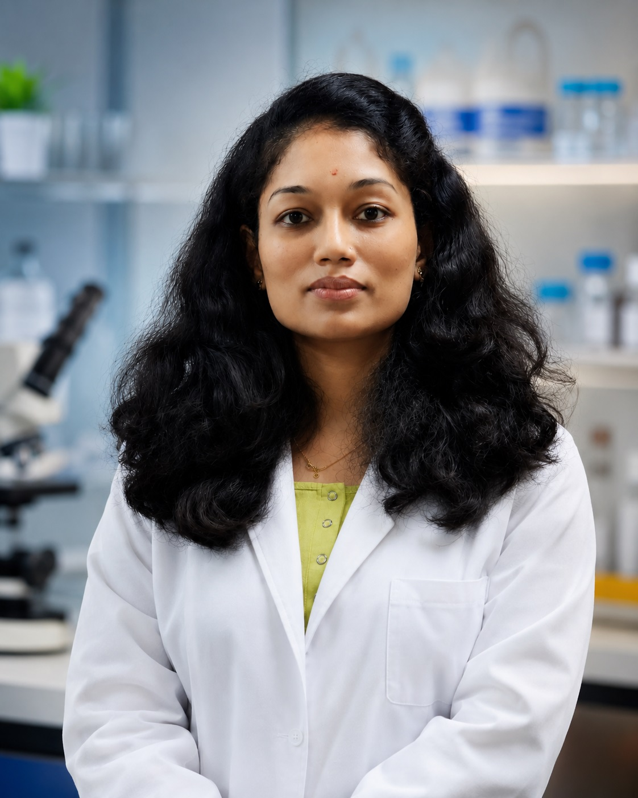
PhD researcher in Biological Science at AcSIR and CSIR-IITR, Lucknow.
My research focuses on environmental microbiology, fungal endophytes, rhizospheric microbiology and arsenic bioremediation.
I aim to understand microbial functions and translate them into sustainable solutions for environmental and agricultural challenges.
Know more about me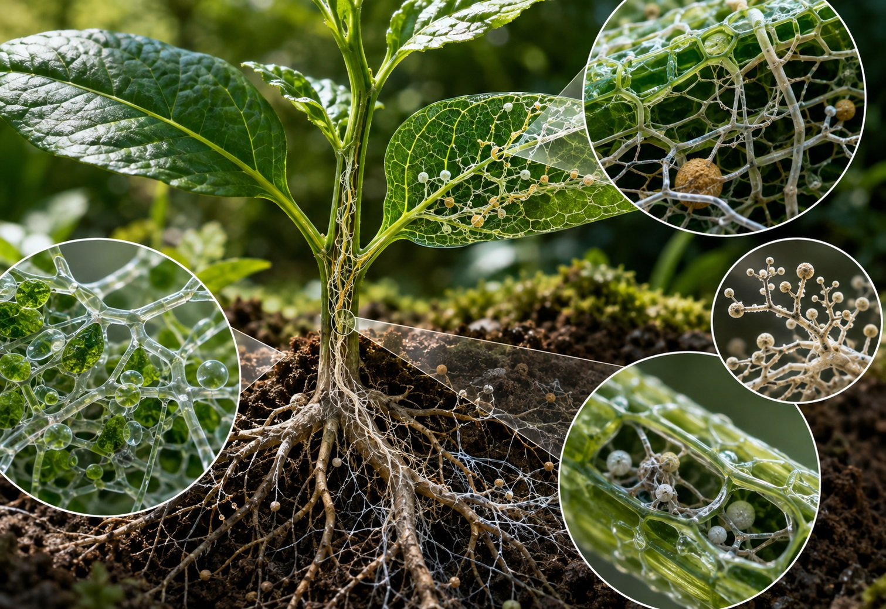
Fungal endophytes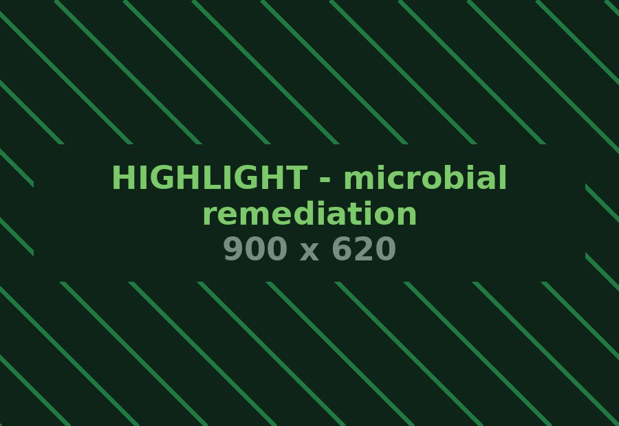
Microbial remediation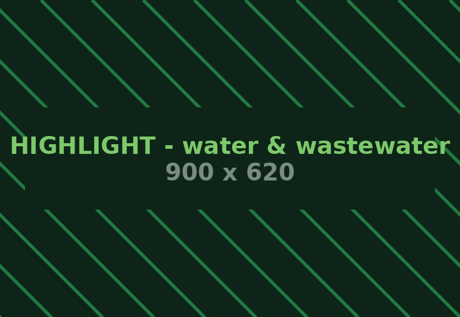
Water & wastewater treatment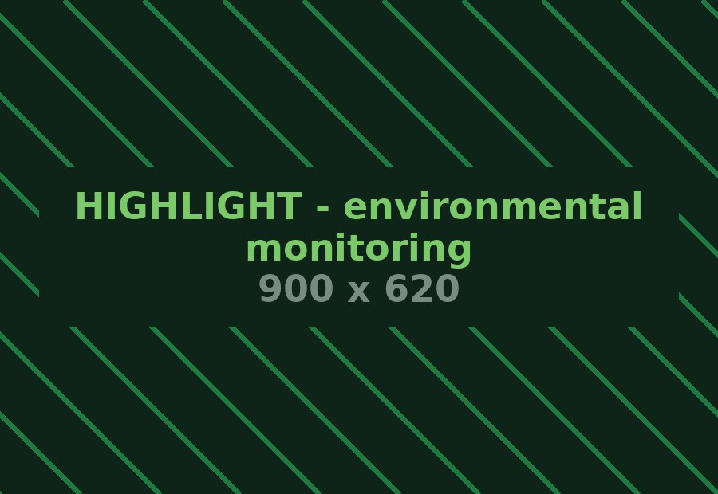
Environmental monitoringResearch
Each theme starts in the field — a contaminated aquifer, a paddy soil, a wetland outlet — and ends at the bench, where microbial function is isolated, characterised and put to work.
Environmental microbiology and microbial ecology form the base of my work: isolating, culturing and characterising bacterial and fungal communities from water, soil and rhizosphere, then reading their diversity and function through molecular and multi-omics approaches.
Rhizospheric and endophytic microbes — Serendipita indica among them — can restrict metal uptake, support growth and buffer plants against stress. I study these associations to build biological inputs that work under real field contamination.
From arsenic mobilisation in Haridwar groundwater to microbe-assisted remediation in the arsenic-impacted agricultural soils of Laksar, this thread follows the element through biogeochemical transformation, bioaccumulation and cell-wall adsorption.
Water quality assessment and environmental monitoring — constructed wetlands, wastewater treatment performance, and the physicochemical parameters that decide whether a system removes chemical and bacterial load or merely moves it downstream.
Projects

National Institute of Hydrology, Roorkee · 2022–2024
Groundwater quality assessment across an arsenic-affected belt: field sampling and collection, physicochemical and environmental analysis, instrument operation under QA/QC protocols, and statistical interpretation feeding into remediation strategy.

M.Sc. dissertation · NIH Roorkee · 2022
How well does a constructed wetland actually clean water? The study paired physicochemical parameter analysis with isolation, cultivation and identification of the bacterial communities driving pollutant degradation inside the system.

Ongoing · CSIR-IITR, Lucknow
Mapping heavy-metal contamination across Laksar's agricultural fields, then testing the microbe-assisted remediation potential of the communities already living in those soils.

Ongoing · CSIR-IITR, Lucknow
Characterising how Serendipita indica and its endofungal bacterial partners take up and immobilise arsenic and cadmium — bioaccumulation inside cells, adsorption on the cell wall, and what that means for crop protection.
Publications
Environmental Technology & Innovation, 104229
doi.org/10.1016/j.eti.2025.104229In Occurrence, Detection, and Fate of Microplastics in Freshwater Ecosystems (pp. 1–39). Springer Nature Singapore
doi.org/10.1007/978-981-95-0225-7_1In Fungi in Wastewater Treatment: Volume 2 (pp. 101–123). Springer Nature Switzerland
doi.org/10.1007/978-3-032-01955-4_5In Fungi in Wastewater Treatment: Volume 2 (pp. 283–308). Springer Nature Switzerland
doi.org/10.1007/978-3-032-01955-4_13In Fungi in Wastewater Treatment: Volume 2 (pp. 217–242). Springer Nature Switzerland
doi.org/10.1007/978-3-032-01955-4_10Experience
AcSIR · CSIR-Indian Institute of Toxicology Research, Lucknow
National Institute of Hydrology, Roorkee — arsenic mobilisation in Haridwar groundwater: field sampling, physicochemical analysis, analytical instrumentation, QA/QC, technical reporting.
National Institute of Hydrology, Roorkee — evaluation of constructed wetland in chemical and bacterial removal.
Banasthali Vidyapith · 9.00 CGPA · First rank and gold medal
Banasthali Vidyapith · 7.45 CGPA
Conferences
EGU General Assembly 2026 · Vienna, Austria · 3–8 May 2026 · EGU26-811
doi.org/10.5194/egusphere-egu26-811International Symposium on Emerging Contaminants in Water with Special Focus on Arsenic and Fluoride Contamination (ECWAF 2026) · IIT Roorkee · 29–30 May 2026
Roorkee Water Conclave 2026 · IIT Roorkee & NIH Roorkee · 23–25 February 2026
Emerging Approaches in Risk Analysis and Translational Aspects of Health and Environment (EARTH 2025) · CSIR-IITR, Lucknow · 12–15 November 2025
3rd Roorkee Water Conclave · IIT Roorkee · 3–6 March 2024
International Conference on Future of Water Resources (ICFWR 2024) · IIT Roorkee · 18–20 January 2024
10th Bharatiya Chhatra Sansad · MIT World Peace University · 20–23 February 2020
Gallery
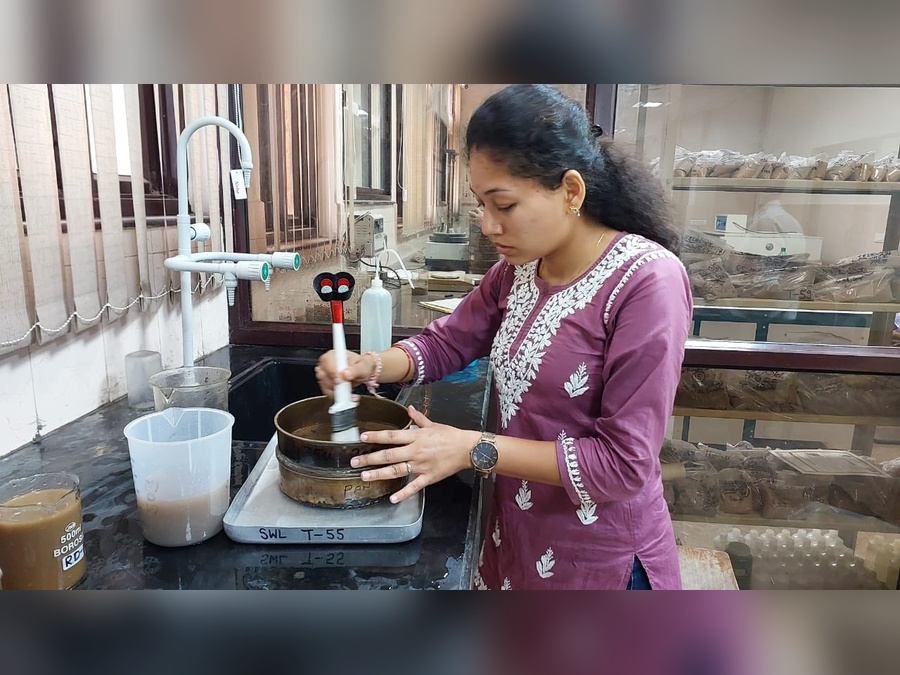
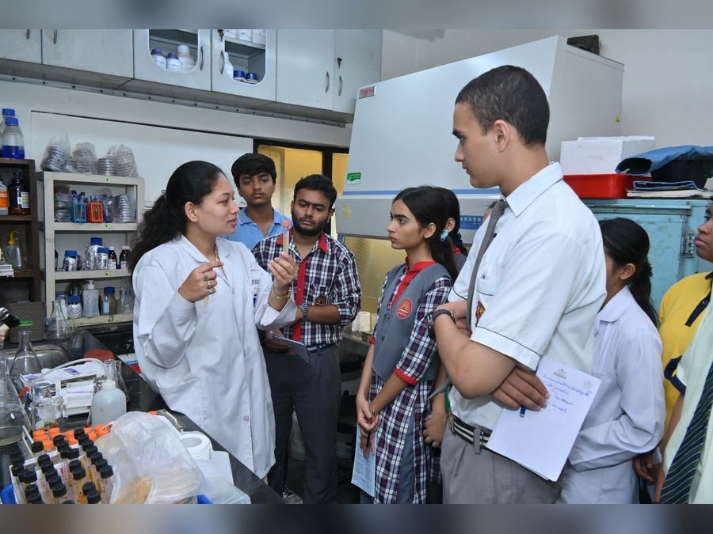
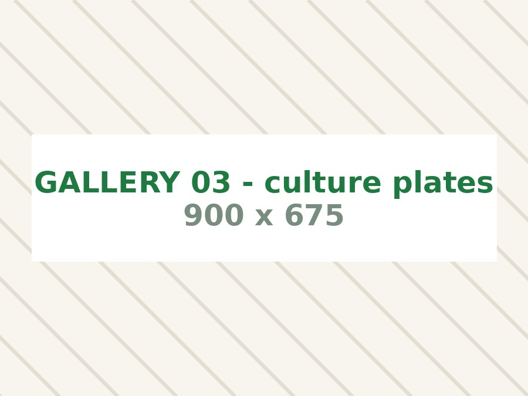
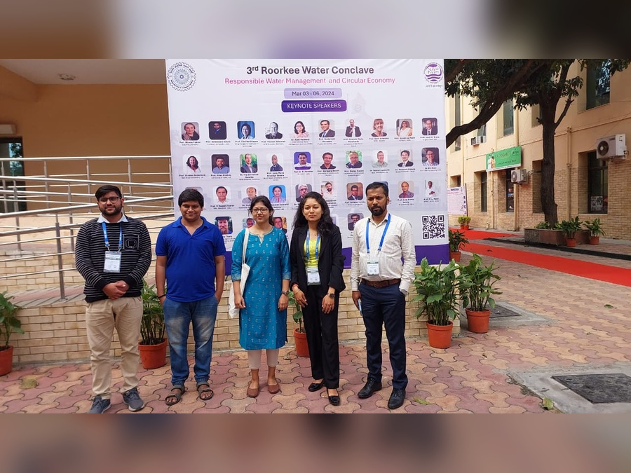
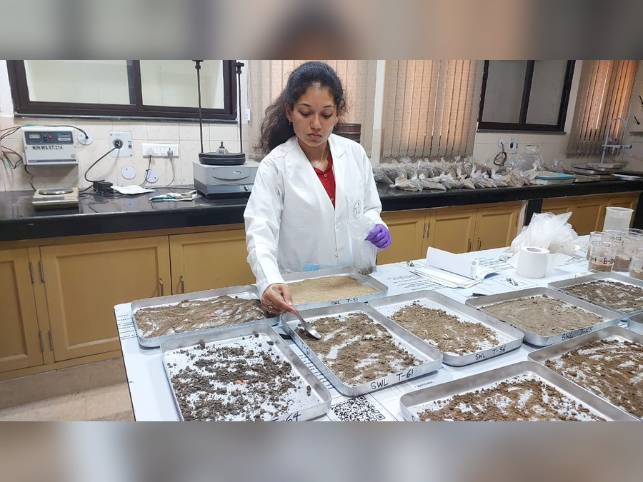
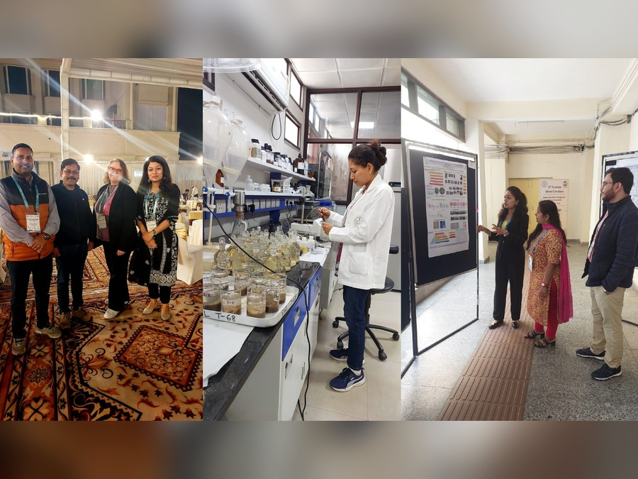
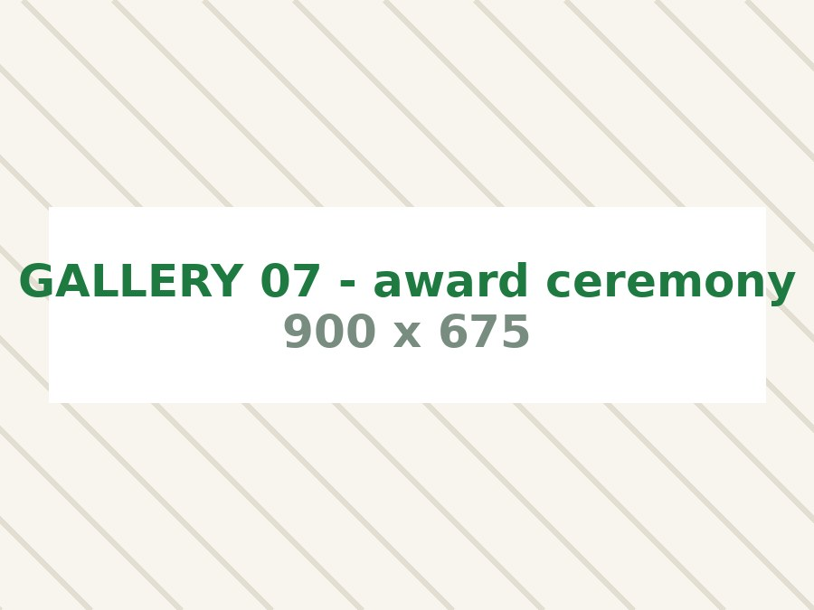
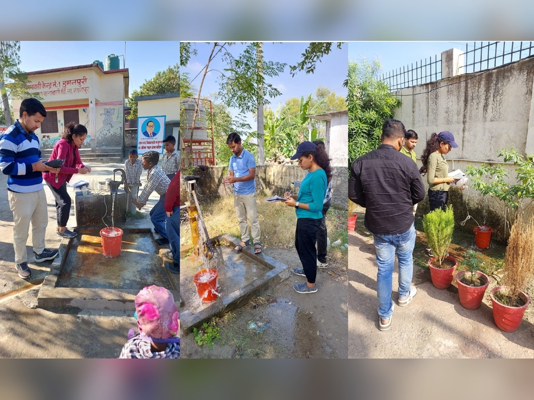
Contact
I am glad to hear from research groups working on bioremediation, plant–microbe systems and water quality — and from students looking for a way into environmental microbiology.